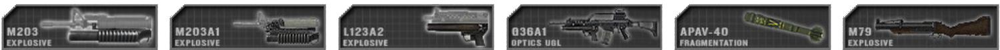
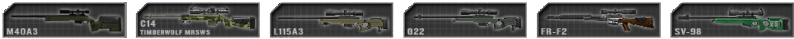
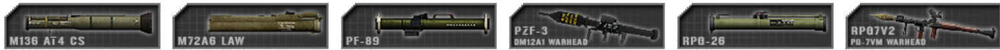
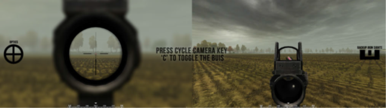

Ausrüstung
Generell Waffen & Ausrüstung
Waffen brauchen nach längerer Bewegung manchmal einen Moment, um Präzision zu erreichen und zielgenau zu feuern. Engagements auf kurzen Distanzen sind von bewegungsbasierten Abweichungen nicht betroffen. Dies ermöglicht es Spielern, kleine Positionskorrekturen durchzuführen, ohne Waffenungenauigkeit zu erleiden. Hinlegen verringert die Genauigkeit des Spielers für einige Momente, bietet aber die höchste Genauigkeit für Fernziele, sobald das Ziel des Spielers wiederhergestellt ist.
Die meisten Waffen sind standardmäßig auf den halbautomatischen Betrieb eingestellt.
Waffen müssen manuell neu geladen werden (Standard: R). Die Waffenabweichung wird nicht durch eine Optik oder ein Visier beeinflusst. Waffen werden in PR: BF2 klassifiziert, oft verbunden mit den Kits, die sie benutzen:
 Sturmgewehre sind in der Regel in verschiedenen Varianten mit unterschiedlichen Visierungen erhältlich. Das Einvisieren mit vergrößerter Optik hat einen Genauigkeitsvorteil, wird jedoch durch eine stark reduzierte periphere Sicht im Vergleich zu Reflexvisier oder Visier verhindert.
Sturmgewehre sind in der Regel in verschiedenen Varianten mit unterschiedlichen Visierungen erhältlich. Das Einvisieren mit vergrößerter Optik hat einen Genauigkeitsvorteil, wird jedoch durch eine stark reduzierte periphere Sicht im Vergleich zu Reflexvisier oder Visier verhindert.
Kits: Alle Kits, die keine andere Primärwaffe verwenden oder unbewaffnet sind
 Unterlauf Granatwerfer (UGL ) sind an der Unterseite von Sturmgewehren befestigt und werden gegen Gruppen von Feinden oder Individuen eingesetzt das kann nicht durch direktes Feuer getroffen werden. Sie sind auch gegen ungepanzerte Fahrzeuge wirksam und können effektiv bei Reichweiten weit über 200 m eingesetzt werden. Die Granaten müssen 28 m zurücklegen, bevor sie sich scharf stellen oder sie explodieren nicht. UGLs können auch Rauchgranaten abfeuern, die dazu dienen, die Sicht des Gegners zu verschleiern. Der Werfer-Bereich kann durch Verwendung eines Leitervisiers an der Waffe eingestellt werden. Während Sie auf dieses Ziel zielen, können Sie mit dem Radiomenü (Standard: Q ) den Entfernungsabstand einstellen.(siehe Feuerbereich einstellen) Wenn Ziele höher oder niedriger als die vordefinierten Entfernungen erfasst werden, ist es wichtig, dies zu kompensieren. Auf Nachtkarten hat der Grenadier auch Zugang zu Leuchtkugeln.
Kits: Grenadier
 Faustfeuerwaffen werden traditionell von Squadführern konventioneller Streitkräfte als Backup und Zeichen der Autorität benutzt. Scharfschützen sind auch mit einem Faustfeuerwaffe zur Selbstverteidigung beim Umsetzen ausgestattet. Einige Aufständische, die keine Primärwaffe haben, benutzen stattdessen eine Faustfeuerwaffe.
Faustfeuerwaffen werden traditionell von Squadführern konventioneller Streitkräfte als Backup und Zeichen der Autorität benutzt. Scharfschützen sind auch mit einem Faustfeuerwaffe zur Selbstverteidigung beim Umsetzen ausgestattet. Einige Aufständische, die keine Primärwaffe haben, benutzen stattdessen eine Faustfeuerwaffe.
Kits: Offizier, Sniper, Pilot, Zellenleiter, Vietnam Grenadier, verschiedene Insurgent Kits
 Schrotflinten sind tödlich, wenn sie in unmittelbarer Nähe benutzt werden. Sie können auch verwendet werden, um verschlossene Türen und Tore zu durchbrechen. Aufständische Zivilisten können mit Schrottschüssen verhaftet werden, die einen Informanten mit Gummigeschossen außer Gefecht setzen. Die britische halbautomatische Schrotflinte, der L128A1, kann auch Sabot Solid Geschosse abfeuern, die auf große Entfernungen effektiv sind. Einige Schrotflinten verwenden durchbrechende Geschosse, die nur dazu verwendet werden können, verschlossene Türen zu durchbrechen.
Schrotflinten sind tödlich, wenn sie in unmittelbarer Nähe benutzt werden. Sie können auch verwendet werden, um verschlossene Türen und Tore zu durchbrechen. Aufständische Zivilisten können mit Schrottschüssen verhaftet werden, die einen Informanten mit Gummigeschossen außer Gefecht setzen. Die britische halbautomatische Schrotflinte, der L128A1, kann auch Sabot Solid Geschosse abfeuern, die auf große Entfernungen effektiv sind. Einige Schrotflinten verwenden durchbrechende Geschosse, die nur dazu verwendet werden können, verschlossene Türen zu durchbrechen.
Kits: Schütze Breacher über konventionelle Streitkräfte. Verschiedene Aufständische / Hamas / Taliban / Milizkits
 Ausgewiesene Scharfschützengewehre (DMR ) werden verwendet, um Ziele von großer Priorität mit Präzision zu entfernen. Sie können eingesetzt werden, um ihre Genauigkeit auf Kosten der Mobilität erheblich zu erhöhen. Die Haltung eines Spielers hat Auswirkungen auf die Genauigkeit der langen Reichweite, während der DMR eingesetzt wird, und seine optimale Schussposition liegt im Liegendanschlag. Wenn Sie auf Ziele treffen, die bis zu 600m entfernt sind, müssen Sie den Schuss kompensieren. Es ist immer noch wichtig, bewegliche Ziele auf Distanz zu kompensieren. Um die Genauigkeit zu maximieren, sollte der Schütze ungefähr eine Sekunde pro abgefeuerte Runde warten.
Ausgewiesene Scharfschützengewehre (DMR ) werden verwendet, um Ziele von großer Priorität mit Präzision zu entfernen. Sie können eingesetzt werden, um ihre Genauigkeit auf Kosten der Mobilität erheblich zu erhöhen. Die Haltung eines Spielers hat Auswirkungen auf die Genauigkeit der langen Reichweite, während der DMR eingesetzt wird, und seine optimale Schussposition liegt im Liegendanschlag. Wenn Sie auf Ziele treffen, die bis zu 600m entfernt sind, müssen Sie den Schuss kompensieren. Es ist immer noch wichtig, bewegliche Ziele auf Distanz zu kompensieren. Um die Genauigkeit zu maximieren, sollte der Schütze ungefähr eine Sekunde pro abgefeuerte Runde warten.
Kits: Marksman
 Scharfschützengewehre werden verwendet, um Ziele von großer Priorität mit Präzision zu entfernen. Ihre Feuerrate ist langsam, da sie mit Repitierung arbeiten. Die Haltung des Spielers beeinflusst die Genauigkeit der Scharfschützengewehre. Die Kompensation der Geschosse wird nur in Bereichen über 600 m benötigt. Die maximale Genauigkeit wird erreicht, indem Sie etwa 8 Sekunden nach der Bewegung und 4 Sekunden nach dem abfeuern warten. Die Taste "Feuermodus wechseln" (Standard 3 ) kann verwendet werden, um Ihre Atmung zu stabilisieren, die etwa 8 Sekunden dauert. Dieser Ton kann Ihnen helfen, die Zeit zu schätzen, die benötigt wird, um die Genauigkeit wiederherzustellen. Wenn Sie den Feuerknopf nach dem Schießen gedrückt halten, können Sie Ihren Schuss verfolgen, bevor Sie das Gewehr abstoßen.
Kits: Sniper
 Sub-Maschinengewehre (SMG ) werden in Häuserkampf auf kurze Entfernung verwendet. Ihre Feuerrate ist schnell und sie schießen hauptsächlich Pistolenmunition wie 9-mm-Munition, obwohl es Ausnahmen gibt. Einige Maschinenpistolen fallen unter die Klassifikation der persönlichen Verteidigungswaffe (PDW), die gewöhnlich eine kürzere Lauflänge haben, die ihnen erhöhte Manövrierfähigkeit und Portabilität gibt. Diese Waffen können unterwegs mit wenig bis keiner Bewegungsabweichung verwendet werden, sind aber durch ihre effektive Reichweite eingeschränkt.
Sub-Maschinengewehre (SMG ) werden in Häuserkampf auf kurze Entfernung verwendet. Ihre Feuerrate ist schnell und sie schießen hauptsächlich Pistolenmunition wie 9-mm-Munition, obwohl es Ausnahmen gibt. Einige Maschinenpistolen fallen unter die Klassifikation der persönlichen Verteidigungswaffe (PDW), die gewöhnlich eine kürzere Lauflänge haben, die ihnen erhöhte Manövrierfähigkeit und Portabilität gibt. Diese Waffen können unterwegs mit wenig bis keiner Bewegungsabweichung verwendet werden, sind aber durch ihre effektive Reichweite eingeschränkt.
Kits: Crewman, Schütze AT, Heavy Antitank, Truppführer, Schütze Breacher über unkonventionelle Streitkräfte
 Leichte Maschinengewehre (LMG ) werden verwendet, um den Gegner zu unterdrücken und können einen gegnerischen Trupp bei mittlerer Reichweite niederhalten oder in Hinterhalt Situationen vernichten. Sie können eingesetzt werden, um ihre Genauigkeit, Stabilität und Reichweite zu erhöhen. Bei Verwendung des implementierten LMG wird die Genauigkeit erhöht, jedoch nur, wenn die Mobilität minimal ist und sie nicht für den mobilen Einsatz geeignet ist. Die Standposition des Spielers beeinflusst die Genauigkeit seiner langen Reichweite und seine optimale Schussposition liegt im Liegendanschlag. In dieser Position erzielen Sie die höchste Genauigkeit bei großen Entfernungen. Der nicht-entfaltete Modus wird verwendet, wenn ein Spieler mobil ist und bei kürzeren Entfernungen ohne Verzögerung zurückfeuern muss.
Leichte Maschinengewehre (LMG ) werden verwendet, um den Gegner zu unterdrücken und können einen gegnerischen Trupp bei mittlerer Reichweite niederhalten oder in Hinterhalt Situationen vernichten. Sie können eingesetzt werden, um ihre Genauigkeit, Stabilität und Reichweite zu erhöhen. Bei Verwendung des implementierten LMG wird die Genauigkeit erhöht, jedoch nur, wenn die Mobilität minimal ist und sie nicht für den mobilen Einsatz geeignet ist. Die Standposition des Spielers beeinflusst die Genauigkeit seiner langen Reichweite und seine optimale Schussposition liegt im Liegendanschlag. In dieser Position erzielen Sie die höchste Genauigkeit bei großen Entfernungen. Der nicht-entfaltete Modus wird verwendet, wenn ein Spieler mobil ist und bei kürzeren Entfernungen ohne Verzögerung zurückfeuern muss.
Kits: Automatic Rifleman
 Mittlere Maschinengewehre (MMG ) sind eine Mittelklasseversion des Maschinengewehrs. Sie verwenden eine größere 7,62-mm-Kaliber-Runde, die in bestimmten Situationen verheerende Auswirkungen haben kann und hervorragend dazu geeignet ist, Gegner aus großer Entfernung zu unterdrücken. Aufgesetzt benötigen sie 10 Sekunden, bevor sie die optimale Feuerkraft erreichen.
Mittlere Maschinengewehre (MMG ) sind eine Mittelklasseversion des Maschinengewehrs. Sie verwenden eine größere 7,62-mm-Kaliber-Runde, die in bestimmten Situationen verheerende Auswirkungen haben kann und hervorragend dazu geeignet ist, Gegner aus großer Entfernung zu unterdrücken. Aufgesetzt benötigen sie 10 Sekunden, bevor sie die optimale Feuerkraft erreichen.
Kits: Maschinengewehr
 Splittergranaten haben einen großen Explosionsradius, aber sie sind nicht genau, wenn sie geworfen werden, während sie sich bewegen oder springen, und ihre Reichweite ist relativ kurz. Es dauert ungefähr 5 Sekunden, bis sie detonieren. Einige Granaten wie die RGO und RKG Granaten explodieren beim Aufprall. Die RKG ist auch ein Beispiel für eine Granate, die für den Einsatz gegen Fahrzeuge gedacht ist. Der Stein verursacht nur leichte Verletzungen beim treffen eines Spielers, aber mehrere Treffer können immer noch tödlich sein. Um Ihre Verbündeten zu warnen, bevor Sie eine Granate werfen, können Sie den Hauptradioschlüssel verwenden (Standard: Q ), während Sie die Granate halten, um eine Warnung zu rufen, oder alternativ mumble.
Splittergranaten haben einen großen Explosionsradius, aber sie sind nicht genau, wenn sie geworfen werden, während sie sich bewegen oder springen, und ihre Reichweite ist relativ kurz. Es dauert ungefähr 5 Sekunden, bis sie detonieren. Einige Granaten wie die RGO und RKG Granaten explodieren beim Aufprall. Die RKG ist auch ein Beispiel für eine Granate, die für den Einsatz gegen Fahrzeuge gedacht ist. Der Stein verursacht nur leichte Verletzungen beim treffen eines Spielers, aber mehrere Treffer können immer noch tödlich sein. Um Ihre Verbündeten zu warnen, bevor Sie eine Granate werfen, können Sie den Hauptradioschlüssel verwenden (Standard: Q ), während Sie die Granate halten, um eine Warnung zu rufen, oder alternativ mumble.
Kits: Granaten: die meisten Infanterie-Kits, besonders Offiziere und Schützen ` | _Steine: Zivilist und einige Aufständische
 Messer & Bajonette sind sofort tödlich, wenn sie den Feind treffen. Gegnerische Aufständische, die mit Messer getötet werden, gelten als Festnahme. Unbewaffnete Nahkampfangriffe benötigen ungefähr 5 Treffer, um einen Gegner zu töten.
Messer & Bajonette sind sofort tödlich, wenn sie den Feind treffen. Gegnerische Aufständische, die mit Messer getötet werden, gelten als Festnahme. Unbewaffnete Nahkampfangriffe benötigen ungefähr 5 Treffer, um einen Gegner zu töten.
Kits: Armed Melee: alle außer Pilot, unbewaffneter Zivilist | Unbewaffneter Nahkampf: Pilot und unbewaffnet
 Leichte Panzerabwehrraketen (LAT ) werden gegen ungepanzerte und leicht gepanzerte Ziele eingesetzt. Sie sind nicht wirksam gegen mittlere oder schwere Rüstung. Der Bediener muss den Werfer vorbereiten, indem er stillsteht, um das Ziel zu erreichen, was ungefähr 4 Sekunden dauert, bevor Sie eine optimale Schussgenauigkeit erreichen. Abhängig davon, welcher spezielle Werfer verwendet wird, hängt davon ab, wie sie funktionieren. Einige Trägerraketen sind zum Retikulum angeordnet, andere sind einstellbar, aber im Allgemeinen sind sie bis zu 500 m genau. Um ein Ziel effektiv auf Distanz zu treffen, müssen Geschicklichkeit und Timing erfolgreich sein. Die Reichweite eines Werfers kann eingestellt werden, indem ein an der Waffe angebrachter Visier mit einstellbarer Reichweite verwendet wird, während dieser Zielpunkt nach unten gerichtet wird. Um diesen Vorgang auszuführen, halten Sie die Kommunikations-Rose (Standard: Q ) gedrückt und wählen Sie den Bereich für Ihr Ziel aus.(siehe Feuerbereich einstellen) Wenn Sie Ziele zwischen den festgelegten Bereichen angreifen, können Sie den Angriffswinkel manuell kompensieren, indem Sie entweder Ihr Ziel erhöhen oder absenken, um einen effektiven Treffer am Ziel zu erzielen.
Kits: Schütze AT, Miliz / Taliban / Hamas Anti Tank
 Schwere Panzerabwehrraketen (HAT ) werden verwendet, um gepanzerte Fahrzeuge anzugreifen. Sie können leichte und mittlere Rüstungen mit einem einzigen Treffer zerstören, während Kampfpanzer (MBT ) mehrere Treffer zum Zerstören benötigen. Die Wirksamkeit der schweren AT hängt davon ab, wo Sie die MBT getroffen haben. Die Panzerung eines Panzers ist am Heck des Fahrzeugs und an der Spitze des Turms am schwächsten. Umgekehrt ist die stärkste Seite des Tanks die Front. Um die Waffe für das Abfeuern vorzubereiten, musst du zuerst die Waffe für eine beträchtliche Zeit, etwa 10 Sekunden, absetzen. Um das Ziel effektiv zu verfolgen, muss man sich auf eine lange Distanz befinden, sonst wird die Waffe während der Verfolgung ungenau. Sobald sich die Fadenkreuzmarker in der zentrierten Position befinden, sind Sie bereit zu feuern. Spezielle Trägerraketen sind mit Drahtführung ausgestattet, mit der Sie den Gefechtskopf direkt zum Ziel führen können. Um ein bewegtes Ziel zu verfolgen, halten Sie den primären Feuerknopf gedrückt, bis die Rakete abfeuert und verfolgen Sie das Ziel bis zum Aufprall. Einige HATs sind ungeführt und feuern gerade und einige zeigen keine Strichmarkierungen. Stellen Sie vor dem Abfeuern sicher, dass das Ziel mehr als 30m von Ihnen entfernt ist, da sich der Gefechtskopf sonst nicht scharf stellt und nicht explodiert.
Schwere Panzerabwehrraketen (HAT ) werden verwendet, um gepanzerte Fahrzeuge anzugreifen. Sie können leichte und mittlere Rüstungen mit einem einzigen Treffer zerstören, während Kampfpanzer (MBT ) mehrere Treffer zum Zerstören benötigen. Die Wirksamkeit der schweren AT hängt davon ab, wo Sie die MBT getroffen haben. Die Panzerung eines Panzers ist am Heck des Fahrzeugs und an der Spitze des Turms am schwächsten. Umgekehrt ist die stärkste Seite des Tanks die Front. Um die Waffe für das Abfeuern vorzubereiten, musst du zuerst die Waffe für eine beträchtliche Zeit, etwa 10 Sekunden, absetzen. Um das Ziel effektiv zu verfolgen, muss man sich auf eine lange Distanz befinden, sonst wird die Waffe während der Verfolgung ungenau. Sobald sich die Fadenkreuzmarker in der zentrierten Position befinden, sind Sie bereit zu feuern. Spezielle Trägerraketen sind mit Drahtführung ausgestattet, mit der Sie den Gefechtskopf direkt zum Ziel führen können. Um ein bewegtes Ziel zu verfolgen, halten Sie den primären Feuerknopf gedrückt, bis die Rakete abfeuert und verfolgen Sie das Ziel bis zum Aufprall. Einige HATs sind ungeführt und feuern gerade und einige zeigen keine Strichmarkierungen. Stellen Sie vor dem Abfeuern sicher, dass das Ziel mehr als 30m von Ihnen entfernt ist, da sich der Gefechtskopf sonst nicht scharf stellt und nicht explodiert.
Kits: Konventionelle Kräfte Anti Tank
 Boden-Luft-Raketen (SAM ) werden verwendet, um feindliche Flugzeuge zu zerstören. Um dies zu erreichen, müssen Sie das Ziel visuell erfassen, indem Sie es durch die Luft verfolgen. Sobald die Verfolgung hergestellt ist, hören Sie einen tiefen Ton, nach ein paar Sekunden, wenn das Ziel angepeilt ist, hören Sie einen sekundären hohen Ton, an diesem Punkt können Sie feuern. Gegenmaßnahmen verhindern, dass du dein Ziel effektiv zerstörst, daher ist dein Angriffswinkel in Bezug auf die Flugrichtung des Flugzeugs entscheidend, um einen Treffer zu erzielen. Feindliche Piloten erhalten ein paar Sekunden, nachdem sie von einem SAM anvisiert wurden, einen Warnton, der ihnen Zeit gibt, sich von der Bedrohung fernzuhalten. Einige ältere Fraktionen wie die Falkland-Fraktionen mit dem Blasrohr haben keine AA-Waffenerfassung und müssen manuell geführt werden.
Boden-Luft-Raketen (SAM ) werden verwendet, um feindliche Flugzeuge zu zerstören. Um dies zu erreichen, müssen Sie das Ziel visuell erfassen, indem Sie es durch die Luft verfolgen. Sobald die Verfolgung hergestellt ist, hören Sie einen tiefen Ton, nach ein paar Sekunden, wenn das Ziel angepeilt ist, hören Sie einen sekundären hohen Ton, an diesem Punkt können Sie feuern. Gegenmaßnahmen verhindern, dass du dein Ziel effektiv zerstörst, daher ist dein Angriffswinkel in Bezug auf die Flugrichtung des Flugzeugs entscheidend, um einen Treffer zu erzielen. Feindliche Piloten erhalten ein paar Sekunden, nachdem sie von einem SAM anvisiert wurden, einen Warnton, der ihnen Zeit gibt, sich von der Bedrohung fernzuhalten. Einige ältere Fraktionen wie die Falkland-Fraktionen mit dem Blasrohr haben keine AA-Waffenerfassung und müssen manuell geführt werden.
Kits: Anti Aircraft
 Fernzünder sind Sprengstoffe, die von einem Remote-Gerät ausgelöst werden, das von der Person ausgelöst wird, die den Sprengstoff platziert hat und normalerweise für Hinterhalte und Verteidigung verwendet wird. Antipersonenminen (Claymores ) benötigen nach dem Einlegen 5 Sekunden, um sich zu aktivieren. Beim Scharfmachen des Zünders wird ein Ton angezeigt, wenn diese Zeit verstrichen ist. Wenn Explosivstoffe vorzeitig ausgelöst werden, explodieren sie überhaupt nicht. IEDs haben diese Sicherheitsvorkehrung nicht. Die meisten Sprengstoffe müssen in Bauchlage aufgestellt werden. Ein Spieler kann bis zu 4 AP-Minen und 5 C4-Packs oder IEDs gleichzeitig platzieren. Einige Soldaten können zwei unabhängige Sprengstoffgruppen platzieren, die einzeln ausgelöst werden können. Diese Sprengstoffe können alle durch den Schraubenschlüssel des Kampftechnikers verbreitet werden. Während der Platzierung kannst du einen Marker auf die Karte setzen, indem du Q drückst. Sie können insgesamt bis zu 3 Marker platzieren.
Fernzünder sind Sprengstoffe, die von einem Remote-Gerät ausgelöst werden, das von der Person ausgelöst wird, die den Sprengstoff platziert hat und normalerweise für Hinterhalte und Verteidigung verwendet wird. Antipersonenminen (Claymores ) benötigen nach dem Einlegen 5 Sekunden, um sich zu aktivieren. Beim Scharfmachen des Zünders wird ein Ton angezeigt, wenn diese Zeit verstrichen ist. Wenn Explosivstoffe vorzeitig ausgelöst werden, explodieren sie überhaupt nicht. IEDs haben diese Sicherheitsvorkehrung nicht. Die meisten Sprengstoffe müssen in Bauchlage aufgestellt werden. Ein Spieler kann bis zu 4 AP-Minen und 5 C4-Packs oder IEDs gleichzeitig platzieren. Einige Soldaten können zwei unabhängige Sprengstoffgruppen platzieren, die einzeln ausgelöst werden können. Diese Sprengstoffe können alle durch den Schraubenschlüssel des Kampftechnikers verbreitet werden. Während der Platzierung kannst du einen Marker auf die Karte setzen, indem du Q drückst. Sie können insgesamt bis zu 3 Marker platzieren.
Kits: AP Mines: Rifleman AP | Mine, Mörser, TNT IEDs: Sapper | Water Container IED: Sapper und unkonventioneller Ingenieur
 Zeitzünder sind Sprengstoffe auf einer Zeitschaltuhr, die kurz nach ihrer Zündung detonieren und hauptsächlich zum Entfernen stationärer Gegenstände verwendet werden wie feindliche Feuerbasen, Munitionslager und verlassene feindliche Fahrzeuge. Die zwei wichtigsten Arten von zeitgesteuerten Sprengstoffen sind die großen und kleinen C4-Ladungen . Das große C4 ist nur ein bisschen mehr als doppelt so leistungsstark wie die kleine C4 Ladung und nur für das Pionier Kit verfügbar, während die kleine C4 sowohl vom Pionieren als auch von Zugangstechnikern getragen wird. Sie müssen nur eine Ladung der Großen oder Kleinen C4s auflegen, um eine Feuerbasis zu zerstören, aber eine einzelne Kleine C4 Ladung wird nicht sofort eine Feuerbasis zerstören, stattdessen wird die Feuerbasis ein paar Sekunden nach dem Detonieren der Ladung kollabieren und geben der gegnerische Mannschaft Zeit, um die Firebase zu reparieren. Um das Fundament einer Firebase oder eines anderen einsetzbaren Gegenstands zu zerstören, lege einfach eine weitere kleine C4-Ladung auf das Fundament und es wird es kurz nach dem Detonieren zerstören. Der kleine C4 kann auch verwendet werden, um stationäre Fahrzeuge mit 1x Small C4 herauszunehmen, um leichte gepanzerte Fahrzeuge (Land Rover, zivile Autos, Technik, leicht gepanzerte HMMWVs usw.), 2x kleine C4s herauszunehmen, um gepanzerte Jeeps und Lastwagen auszuschalten(Up-Armored HMMWV, Panther CLV und Support & Logistik Trucks wie die M-35, etc.), 3x Small C4s, um APCs zu zerstören. Diese Ladungen können durch den Schraubenschlüssel des Pioniers deaktiviert werden.
Zeitzünder sind Sprengstoffe auf einer Zeitschaltuhr, die kurz nach ihrer Zündung detonieren und hauptsächlich zum Entfernen stationärer Gegenstände verwendet werden wie feindliche Feuerbasen, Munitionslager und verlassene feindliche Fahrzeuge. Die zwei wichtigsten Arten von zeitgesteuerten Sprengstoffen sind die großen und kleinen C4-Ladungen . Das große C4 ist nur ein bisschen mehr als doppelt so leistungsstark wie die kleine C4 Ladung und nur für das Pionier Kit verfügbar, während die kleine C4 sowohl vom Pionieren als auch von Zugangstechnikern getragen wird. Sie müssen nur eine Ladung der Großen oder Kleinen C4s auflegen, um eine Feuerbasis zu zerstören, aber eine einzelne Kleine C4 Ladung wird nicht sofort eine Feuerbasis zerstören, stattdessen wird die Feuerbasis ein paar Sekunden nach dem Detonieren der Ladung kollabieren und geben der gegnerische Mannschaft Zeit, um die Firebase zu reparieren. Um das Fundament einer Firebase oder eines anderen einsetzbaren Gegenstands zu zerstören, lege einfach eine weitere kleine C4-Ladung auf das Fundament und es wird es kurz nach dem Detonieren zerstören. Der kleine C4 kann auch verwendet werden, um stationäre Fahrzeuge mit 1x Small C4 herauszunehmen, um leichte gepanzerte Fahrzeuge (Land Rover, zivile Autos, Technik, leicht gepanzerte HMMWVs usw.), 2x kleine C4s herauszunehmen, um gepanzerte Jeeps und Lastwagen auszuschalten(Up-Armored HMMWV, Panther CLV und Support & Logistik Trucks wie die M-35, etc.), 3x Small C4s, um APCs zu zerstören. Diese Ladungen können durch den Schraubenschlüssel des Pioniers deaktiviert werden.
Kits: Small C4: Konventionelle Streitkräfte Pionier & Zugangstechnikern | Große C4: Konventionelle Kräfte Pionier
Minen sind Kontaktgebunden Explosivmittel, zu denen Pioniere Klassen Zugang haben. Diese können überall im Gelände gespielt werden und werden sichtbar herausragen. Während der Platzierung kannst du einen Marker auf die Karte setzen, indem du Q drückst. Sie können insgesamt bis zu 3 Marker platzieren. Minen können mit dem Schraubenschlüssel eines Pioniers entfernt werden.
Kits: Pionier
 Feldverbände stellen 25% Gesundheit wieder her. Sie werden auf den Boden geworfen, um den Spieler zu heilen, der dem Verband am nächsten steht. Feldverbände werden durch Drücken der Taste 8 oder 9 ausgewählt. Der Erste-Hilfe-Kasten kann einen Spieler vollständig heilen und wird verwendet, indem der Feuerknopf gedrückt gehalten wird, während auf die Person geheilt wird, die geheilt werden soll. Erste-Hilfe-Sets werden nicht länger fallengelassen und brauchen etwas Zeit, um einen schwer verletzten Spieler vollständig zu heilen. Ein Mediziner kann sich selbst heilen, indem er die bereitgestellten Feldverbände verwendet. Spieler in einem Fahrzeug mit einem Sanitäter werden automatisch im Laufe der Zeit heilen. Wiederbelebung wird verwendet, um einen verletzten Spieler vor der Verabreichung eines Adrenalins vorzubereiten. Der Epipen wird dann verwendet, um sie wiederzubeleben. Frisch belebte Soldaten benötigen sofortige medizinische Behandlung, um zu verhindern, dass sie ausbluten.
Feldverbände stellen 25% Gesundheit wieder her. Sie werden auf den Boden geworfen, um den Spieler zu heilen, der dem Verband am nächsten steht. Feldverbände werden durch Drücken der Taste 8 oder 9 ausgewählt. Der Erste-Hilfe-Kasten kann einen Spieler vollständig heilen und wird verwendet, indem der Feuerknopf gedrückt gehalten wird, während auf die Person geheilt wird, die geheilt werden soll. Erste-Hilfe-Sets werden nicht länger fallengelassen und brauchen etwas Zeit, um einen schwer verletzten Spieler vollständig zu heilen. Ein Mediziner kann sich selbst heilen, indem er die bereitgestellten Feldverbände verwendet. Spieler in einem Fahrzeug mit einem Sanitäter werden automatisch im Laufe der Zeit heilen. Wiederbelebung wird verwendet, um einen verletzten Spieler vor der Verabreichung eines Adrenalins vorzubereiten. Der Epipen wird dann verwendet, um sie wiederzubeleben. Frisch belebte Soldaten benötigen sofortige medizinische Behandlung, um zu verhindern, dass sie ausbluten.
Kits: Field Dressing: alle Soldaten | Erste-Hilfe-Ausrüstung, Wiederbelebung, Epiphen: Sanitäter / Corpsman / Aufständischer Sani
 Zusätzliche Munition kann verwendet werden, wenn einem Spieler die Patronen ausgehen. Eine einzelne Munitionstasche liefert normalerweise ein paar Magazine und eine oder zwei Granaten. Die Munitionstasche kann auch verwendet werden, um bereitstellbare Waffen wie MGs, Panzerabwehrraketen und Mörserstellungen aufzuladen.
Zusätzliche Munition kann verwendet werden, wenn einem Spieler die Patronen ausgehen. Eine einzelne Munitionstasche liefert normalerweise ein paar Magazine und eine oder zwei Granaten. Die Munitionstasche kann auch verwendet werden, um bereitstellbare Waffen wie MGs, Panzerabwehrraketen und Mörserstellungen aufzuladen.
_Kits: Schütze und verschiedene Schütze-Kits
 Das Werkzeug "Verschanzung / Spaten" wird verwendet, um bereitstellbare Strukturen für das Team zu erstellen. Es kann nicht offensiv verwendet werden. Um eine Struktur zu konstruieren, musst du darauf zeigen und den Feuerknopf gedrückt halten, bis die Grabungsanimation stoppt. Die Option "Alternativ-Kommunikations-Rose" ermöglicht es den Anführern der Truppe, freundliche Schützenlöcher und Stacheldraht-Straßenblockaden abzureißen.
Das Werkzeug "Verschanzung / Spaten" wird verwendet, um bereitstellbare Strukturen für das Team zu erstellen. Es kann nicht offensiv verwendet werden. Um eine Struktur zu konstruieren, musst du darauf zeigen und den Feuerknopf gedrückt halten, bis die Grabungsanimation stoppt. Die Option "Alternativ-Kommunikations-Rose" ermöglicht es den Anführern der Truppe, freundliche Schützenlöcher und Stacheldraht-Straßenblockaden abzureißen.
Der Schraubenschlüssel / Reparatursatz wird zum Entschärfen und Entfernen von Sprengstoffen wie Landminen, Sprengfallen, Leuchtsignale und Granatenfallen verwendet. Es kann auch bestimmte leichte Fahrzeuge reparieren, wenn sie beschädigt sind. Es kann auch verwendet werden, um Stacheldraht zu bauen. Sowohl die Schaufel als auch der Schraubenschlüssel können eine Waffenlager reparieren.
Kits: Das Werkzeug, Verschanzung / Spaten: alle außer Offizier, Sani, Scharfschütze, Pilot, Zellenführer und Hamas Zivilist
>
Schraubenschlüssel: Konventionelle Streitkräfte Pionier
>
 Rauchgranaten werden verwendet, um Truppenbewegungen zu verbergen oder um befreundeten Flugzeugen zu signalisieren. Smoke-Screen dauert in der Regel etwa 30 Sekunden zum Ergänzen und Ausfüllen. Die Abdeckung hält länger als eine Minute, bevor sie sich auflöst. Kits: Rauchgranate: die meisten Kits | Signal Rauch: Offizier, konventionelle Streitkräfte Schafschütze, Pilot
Rauchgranaten werden verwendet, um Truppenbewegungen zu verbergen oder um befreundeten Flugzeugen zu signalisieren. Smoke-Screen dauert in der Regel etwa 30 Sekunden zum Ergänzen und Ausfüllen. Die Abdeckung hält länger als eine Minute, bevor sie sich auflöst. Kits: Rauchgranate: die meisten Kits | Signal Rauch: Offizier, konventionelle Streitkräfte Schafschütze, Pilot
 Ferngläser erlauben Soldaten, entfernte Feinde zu erkennen und unbekannte Kontakte zu identifizieren. Offiziere und Zellenführer können auch mit ihren Ferngläsern Mörserangriffe anfordern. Der Boden-Laserzielzeichner (GTLD ) wird verwendet, um Ziele für den Einsatz von befreundeten Flugzeug- und Mörserstandorten zu markieren.
Ferngläser erlauben Soldaten, entfernte Feinde zu erkennen und unbekannte Kontakte zu identifizieren. Offiziere und Zellenführer können auch mit ihren Ferngläsern Mörserangriffe anfordern. Der Boden-Laserzielzeichner (GTLD ) wird verwendet, um Ziele für den Einsatz von befreundeten Flugzeug- und Mörserstandorten zu markieren.
Kits: Fernglas: Crewman, Schafschütze und die meisten Kits auf unkonventionellen Fraktionen | GTLD: Offizier und Spotter für konventionelle Streitkräfte
Radios und Mobiltelefone werden verwendet, um feindliche Kontakte dem Rest des Teams zu melden. Sie können auch von Gruppenleitern verwendet werden, um Unterstützung von anderen Einheiten anzufordern und umsetzbare Strukturen zu platzieren.
Kits: Offizier, Zelleiter, Spotter, Zivilist
 Der Grappling-Haken wird verwendet, um über Mauern, Gebäude oder den Zugriff auf die Spitze von Strukturen zu gelangen, um Squadmitgliedern zu erlauben eine höhere Position einzunehmen. Nachdem der Haken sich erfolgreich an einer Oberfläche befestigt hat, kann jeder Spieler das Seil durch Drücken der "Eingabe" -Taste (Standard: E ) nach oben und nach hinten und zum Herabgleiten des Seils nach oben bewegen. Sie bleiben 3 Minuten in Position und können vom Spieler mit der Taste Aufnehmen (Standard: G ) abgerufen werden.
Der Grappling-Haken wird verwendet, um über Mauern, Gebäude oder den Zugriff auf die Spitze von Strukturen zu gelangen, um Squadmitgliedern zu erlauben eine höhere Position einzunehmen. Nachdem der Haken sich erfolgreich an einer Oberfläche befestigt hat, kann jeder Spieler das Seil durch Drücken der "Eingabe" -Taste (Standard: E ) nach oben und nach hinten und zum Herabgleiten des Seils nach oben bewegen. Sie bleiben 3 Minuten in Position und können vom Spieler mit der Taste Aufnehmen (Standard: G ) abgerufen werden.
Kits: Schütze, Pionier, Zivilist und Scout
Fallschirme werden von Piloten und Fallschirmjägern benutzt. Sie werden entfaltet, indem man hektisch den 9er-Schlüssel hämmert. Fallschirme müssen ausreichend lange geöffnet werden, bevor sie den Boden erreichen, um Verletzungen oder einen leichten Todesfall zu vermeiden. Nachdem dein Squad Leader auf einer Karte, die die Paradops unterstützt, den Boden erreicht hat, erscheint neben ihm eine spezielle Vorratskiste. Mit dieser Kiste können nur Kits angefordert werden.
Kits: Pilot, ein beliebiges Spawn-Kit, das von einem Team mit einem Paradop-Spawnpunkt verwendet wird
Kimme & Korn / Nahbereichsvisier (BUIS )
Nahbereichsvisier (BUIS ) wurde entwickelt, um dem Bediener eine alternative Methode zur Erfassung eines Ziels in Abhängigkeit von der Situation zu bieten. Sofern die Waffe über BUIS verfügt, kann ein Spieler mit dem bereits vorhandenen wechsel Kamera-Taste (C ** ) zwischen dem Zielfernrohr und dem Visier wechseln. Der Spieler kann zwischen den Sichtmodi umschalten, was durch den BUIS-Buchstaben in der unteren rechten Ecke angezeigt wird. S für Ziehlfernrohr, B für Visier. Der BUIS-Modus kann jederzeit umgeschaltet werden, egal ob Sie auf das Ziel zielen oder nicht, aber Sie müssen erneut zielen, um zwischen den Modi zu wechseln.
